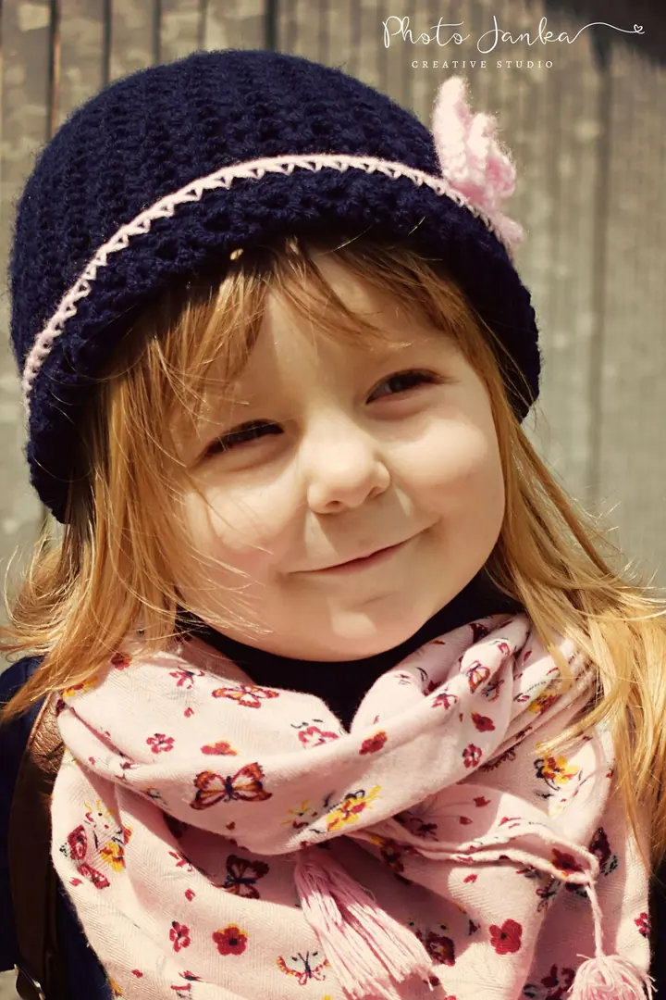

Jmenuji se Jana Semotová a v Chebu fotím děti a rodiny , portréty a ráda si hraju s efekty

. Pracuji tak, aby každá fotka měla nějaký smysl či příběh. Miluji barvy, ale černobílé fotky mají své zvláštní kouzlo.
(02) Co fotím
Focení, které má příběh
01
01 / 04
Efektové focení
Portrét ve speciální grafické úpravě: roztříštění, neon, patronus, komiks, dvojitá expozice nebo ptačí efekt. Efekt spolu vybereme ještě před focením a podle něj fotíme v ateliéru, venku nebo na obou místech.
Fotím děti, miminka i celé rodiny v ateliéru nebo venku, podle domluvy a počasí. Fotky jsou barevné a plné života, k tomu pár kousků v černobílém provedení.
Fotím produkty pro e‑shopy i propagaci a jídla přímo u vás v restauraci, včetně interiéru. Cena se řídí počtem kusů, velikostí a náročností na svícení.
Kliknutím fotku zvětšíte · fotografie jsou ilustrační
(04) Postup
Jak to probíhá
Od první zprávy po hotovou galerii.
1
Krok 1 z 4
První kontakt
Ozvěte se telefonem, e‑mailem nebo přes formulář. Domluvíme se na detailech focení a u efektových fotek rovnou vybereme efekt.
2
Krok 2 z 4
Samotné focení
Fotíme v ateliéru nebo venku podle dohody a počasí. U dětí si dáváme čas, focení se může i trochu protáhnout.
3
Krok 3 z 4
Úprava fotografií
Vybrané fotografie kreativně a pečlivě upravím. U efektových fotek je úprava náročnější, proto jí věnuji víc času.
4
Krok 4 z 4
Předání fotografií
Hotové fotky vám předám v elektronické nebo tištěné podobě.
Ráda fotím barevně, ale i černobíle, protože mají svou duši.
(05) Za objektivem
Ahoj, jsem Jana
Jmenuji se Jana Semotová, ale klidně mi říkejte Janča. Věnuji se efektovému a rodinnému fotografování a chtěla bych vám dát jedinečnou fotografickou zkušenost, která vám zajistí kreativní a krásné chvíle s vaší rodinou.
Fotit se člověk nenaučí ze dne na den, je to spíš běh na dlouhou trať. Každá fotka je pro mě příležitost naučit se něco nového. Hodně se dá získat ve školách a na kurzech, ale cit, kterému já říkám šestý smysl fotografa, se naučit nedá.
Fotím v ateliéru v Chebu i venku, podle domluvy a počasí. Kromě dětí, rodin, těhotenských fotek a portrétů vytvářím efektové fotografie, jako je roztříštění, neon nebo dvojitá expozice. Fotím také produkty a jídla pro restaurace.
01Říkají mi Janča
02Mám ateliér v Chebu
03Miluji barvy
04Ráda fotím i černobíle
05Kačenka je moje častá modelka
Jana
Jana Semotová · Efektová a rodinná fotografka
Domluvme si vaše focení✳Jana Semotová✳Domluvme si vaše focení✳Jana Semotová✳Domluvme si vaše focení✳Jana Semotová✳Domluvme si vaše focení✳Jana Semotová✳
Kolik focení stojí?
Rodinné, dětské, těhotenské a portrétní focení začíná balíčkem Standard za 800 Kč, dále nabízím Premium za 1 800 Kč a Exclusive za 2 500 Kč. Efektové focení stojí 600 Kč za 3 fotografie ve speciální úpravě.
Jak dlouho focení trvá?
Podle balíčku od 30 minut do 2 hodin. U efektového focení záleží na náročnosti vybraného efektu.
Kdo vybírá fotky k úpravě?
Fotky vybírám já, abych zaručila co nejlepší kvalitu výsledku. V balíčku Exclusive je výběr po domluvě s vámi.
Fotíte i mimo Cheb?
Ano. Mimo Karlovarský kraj účtuji dopravu 7 Kč za kilometr.
(07) Kontakt
Domluvme si vaše focení
Napište pár vět o tom, co si představujete, a termín, který se vám hodí.